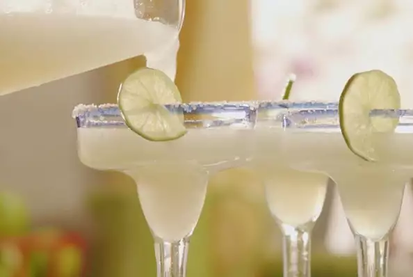

Margaritas Recipe

Description
A very good drink that should be try for this summer !
Ingredients
- 1 (6 ounce) can frozen limeade concentrate
- 6 fluid ounces tequila
- 2 fluid ounces triple sec
Steps
- Fill blender with crushed ice.
- Pour in limeade concentrate, tequila and triple sec.
- Blend until smooth.
- Pour into glasses and serve!